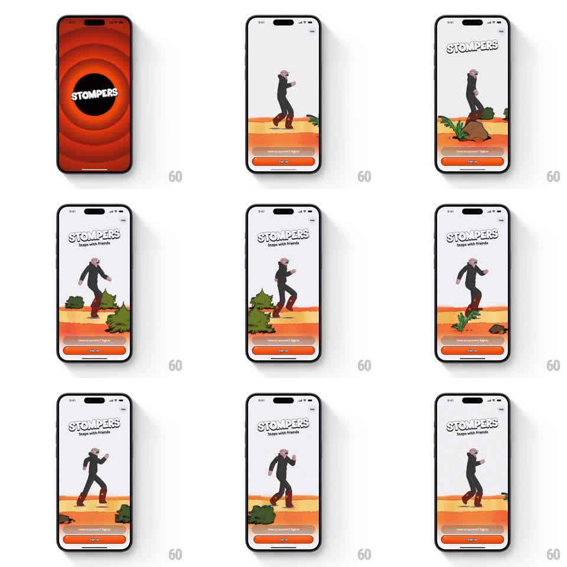

Media
Frame-by-frame

Rebuild this animation 1:1: Stompers' intro - a red splash whose wordmark circle morphs open into the app, where a cartoon character walks an endlessly scrolling desert with parallax plants.

Rebuild this animation 1:1: Stompers' intro - a red splash whose wordmark circle morphs open into the app, where a cartoon character walks an endlessly scrolling desert with parallax plants. ## Integration Integration: stack-agnostic spec - springs given as stiffness/damping, timed motions as duration + curve; map every value to your framework and animation library of choice. ## Scene Red launch screen: STOMPERS wordmark inside a black circle ringed by darker red tunnels. Then the main screen: light sky, a walking character, a scrolling orange desert band with bushes and rocks, STOMPERS header, and a sign-up button pinned at bottom. ## Motion spec Pattern: iris-open transition into parallax walk loop, continuous. - The splash holds (~600ms), then the black circle expands like an iris until it swallows the screen (500ms, ease-in), revealing the main scene inside it. - The character walks in place with a bouncy cartoon gait (+-6px body bob, arms swinging, ~600ms stride cycle). - The desert scrolls leftward in three parallax layers: ground band fastest (~90px/s), bushes mid (~50px/s), far rocks slow (~25px/s); each plant enters from the right, drifts through, exits left. - The STOMPERS header arcs in letter by letter on a curve (60ms stagger, spring stiffness 300 damping 16) once on entry. ## Calibration - The iris must read as the splash circle growing, not a circular fade - keep its edge crisp. - Parallax speed ratios stay locked; independent drift between layers breaks the depth. ## Reduced motion Splash crossfades; character and plants hold static. ## Don't miss - The character's footfalls sync with the ground scroll - feet must not skate. - The wordmark on the splash is identical to the header that arcs in; the intro is one continuous brand moment.